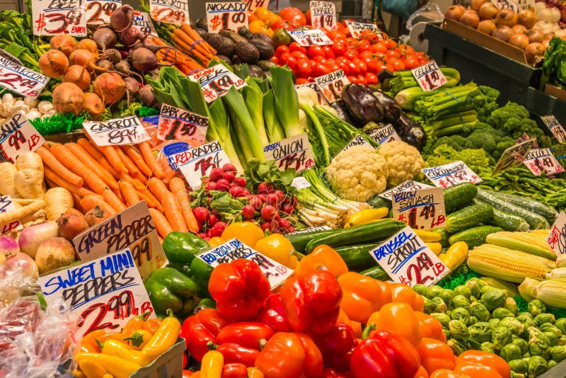

ADMIN DASHBOARD
📊 Reports & Analytics
View simple portal statistics.

📊 Reports & Analytics
View simple portal statistics.
✨ AI Support
This frontend is ready for backend/API connection later.
📌 Next Step
Use the side menu to move to another feature.
More dashboard features
Farmers
View farmer records and registered details.
Crop Monitoring
Review crop stages and health.
Uploaded Images
Review soil/crop image activity.
Crop Recommendations
Manage soil-based recommendation information.
Farmer Notices
Keep important farmer information visible.
System Users
Review portal roles and settings.